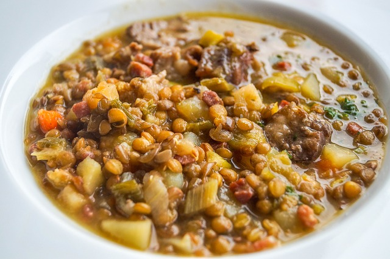

White Bread

Ingredients
- 11 cups of flour
- 2 t. of yeast
- 6 t. sugar
- 6 t. oil
- 4 t. salt
- 1 c. milk
- 3 c. water
- Equipment:kettle, large mixing bowl, large mixing spoon(wooden), 4 cup glass measuring cup, plastic wrap, dish towel,baking sheet
Steps
- Put water in a kettle and turn on to heat up.
- Put 4 cups of flour and all dry Ingredients into a very large bowl and stir to combine.
- Pour oil and milk into large glass measuring cup. If you dont have a large measuring cup, combine Ingredients
- start adding the hot water. When you have about a half cup of water left feel water and keep stirring and feeling the mixxed liquids as you add the water. If its to hot, add a little cold water . If its too cold, add more of the hot water it should be hot enough that you should feel a reaction to sticking in your finger, but not not enough that you want to pull your finger out
- mix the liquids into the flour with a large spoon
- pour remaining flour into the bowl, stirring as you go along. When its too hard to stir, add flour onto your spoon and scrap it clean. Start kneading
- stop adding flour or add more flour to get a consistency where its no longer sticking to your fingers
- Knead about ten minutes. You cant overknead when you are doing it by hand. You lift the bread onto its end, press down, turn the bowl, and repeat.
- Stop when its satiny and it springs back right awat when you press on it.
- Pour oil around the edge of the bowl. Spin the dough around inthe oil to cover the dough and the bowl with oil.
- Cover the bowl with plastic wrap and then a towel.
- if you are in a hurry, put it in a warm place.
- After it has doubled in size, punch it down and form it how youd like to cook ot loaf, bread sticks,rolls,etc.
- Let it rise another 40 minutes before baking at 400 degree in the oven for 20 minutes.
- Take it out an dget it out of the pan onto a cooling rack. Finished bread sounds hollow when you knock on the bottom.
- 2 carrots
- 1 medium onion
- 1 1/2 c. red lentils
- 1 t. vegeta
- salt and pepper as desired
- Equipment: soup pot, stirring spoon, sharp knife, grater
- Grate two carrots.
- Finely dice a medium onion.
- Saute the onion in a splotch of oil in the pot. Traditionally youd add a tablespoon or 2 of tomato paste
- Add 7 cups of water, the carrots, and lentils.
- Season with vegeta.
- Bring to a boil and then turn to the lowwest simmer
- It will take about an hour for the lentils to cook
Soups
Red Lentil Soup
Ingredients
Steps
Notes: You can let it cook for as long as you like, but keep it on very low heat and stir whenever you walk past